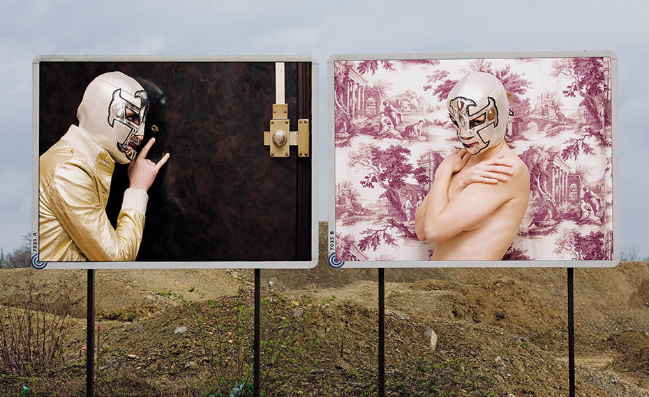
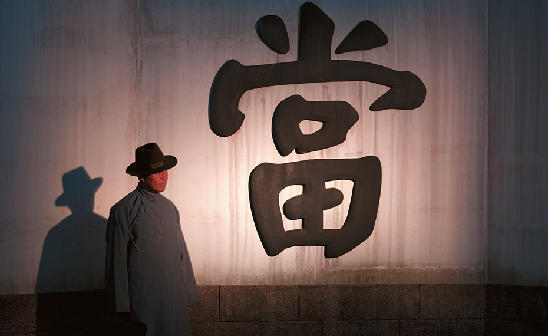
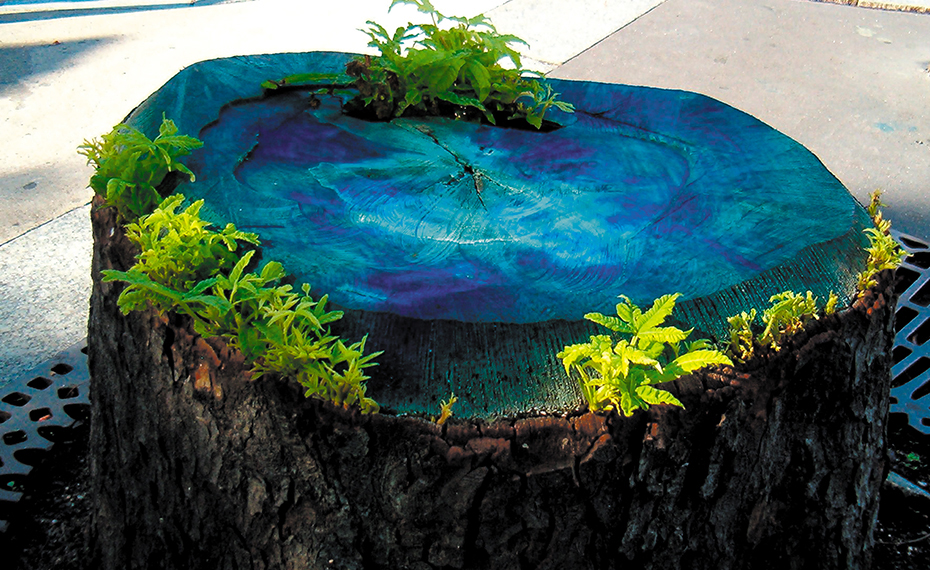
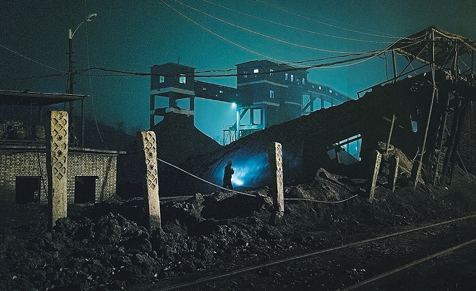
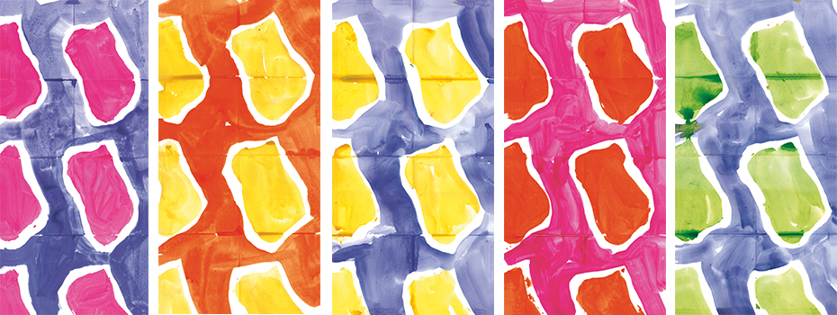
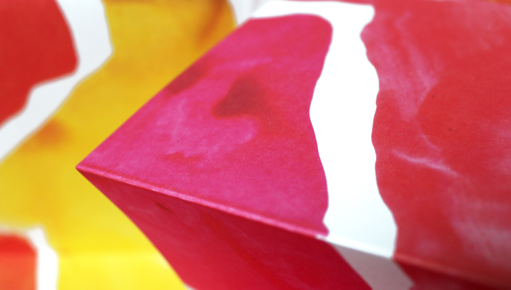
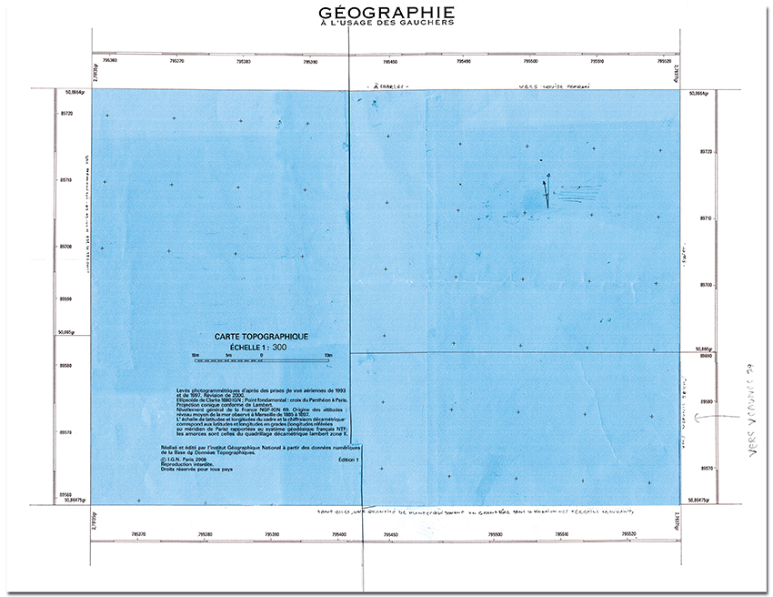
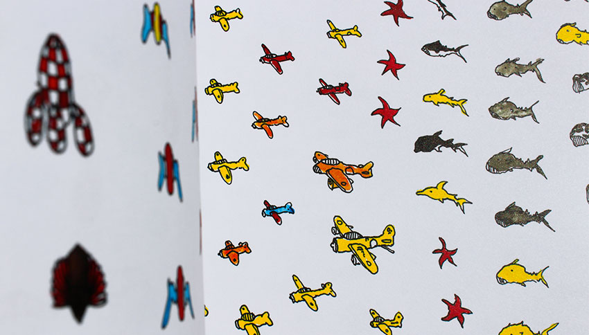
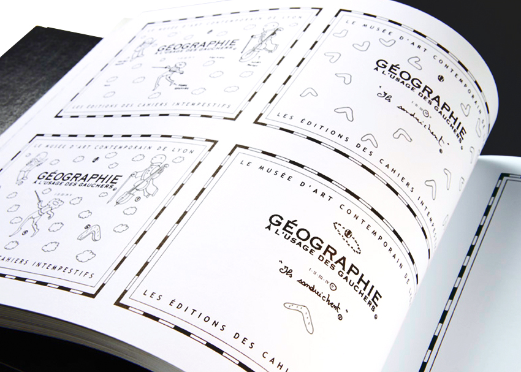
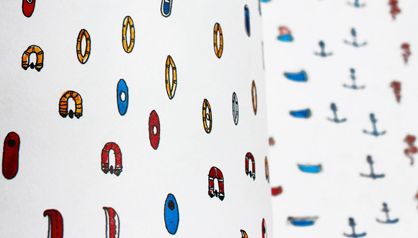

[Cahiers intempestifs n°27] Making-do in New York, Katarina Jerinic, SP Weather Station
édition : Art contemporain
Revue Cahiers intempestifs ¬ Rédaction en chef, design graphique & mise en page
Ont été publiés Txomin Badiola, Jean-Christophe Bailly, Miquel Barceló, Lionel Bayol-Thémines, Jean-Pierre Bertrand, Jean-Sylvain Bieth, Wafaa Bilal, Jean-Noël Blanc, Pierre Buraglio, Tracey Bush, Michel Butor, Sophie Calle, Nancy Campbell, César, Franck Chalendard, CharlElie, Georges-Olivier Châteaureynaud, Noëlle Châtelet, Éric Chevillard, Thomas A. Clark, Bernard Collet, Robert Combas, Patrick Corillon, Anne Delassus, Marie Denis, Monique Deregibus, Erik Dietman, John Dilnot, Helen Douglas, Kerry Downey, Jimmie Durham, Bruna Esposito, Yann Fabès, Tessa Farmer, Philippe Favier, Federico Ferrari, Ian Hamilton Finlay, Forced Entertainment, Paul Fournel, Federico Fusi, Futureflair, Christian Garcin, Ludger Gerdes, Jochen Gerz, Paul-Armand Gette, Marithé et François Girbaud, Michelle Grangaud, Matt Green, Peter Greenaway, Raphaëlle de Groot, Marie-Ange Guilleminot, Susan Hiller, Éric Holder, Fabrice Hyber, Anne Immelé, Wang Jiuliang, Jacques Jouet, Isaac Julien, Sharon Kivland, Georges Kolebka, Anne Lacaton, Philippe Lacoue-Labarthe, Jean Le Gac, Sol LeWitt, Marie Lorenz, Matt Lumby, Pierre Madaule, Tomás Maia, François Martin, Keiichi Matsuda, Ramuntcho Matta, Julian Maynard Smith & Station House Opera, Abdelwahab Meddeb, Charles Melman, Daniel Mesguich, Christian Milovanoff, Mihael Milunovic, Robert Morris, Stuart Mugridge, Guillem Nadal, Jean-Luc Nancy, Paula Naughton, Federico Nicolao, Jutta Nitschke, Roman Opalka, Jean-Michel Othoniel, Bernard Pagès, Riccardo Panattoni, Claudio Parmiggiani, Alexis Pelletier, Pierre Pinoncelli, Vettor Pisani, Anne et Patrick Poirier, Sunita Prasad, Richard Price, Wu Qi, Bernard Rancillac, Sophie Ristelhueber, Jacques Roubaud, Sarkis, Gianluca Solla, Ettore Spalletti, SP Weather, Swoon, Finlay Taylor, Agnès Thurnauer, David Tremlett, the Underbelly Project, Nils-Udo, Jasper Van den Brink, Bernar Venet, Claude Viallat, Dai Xiang, Carmelo Zagari… entre autres.

[23] La musique savante manque à notre désir, Lionel Bayol-Thémines
Revue d'art contemporain, les Cahiers intempestifs se sont toujours définis comme un lieu de confrontation, une croisée d’idées et de rencontres. Clin d’œil nietzschéen dans son titre – goût pour l’aphorisme, pensée qui en appelle d’autres, élan du fragment – cette « revue » d’art contemporain, dans la lignée des Minotaure et autres Derrière le miroir, se présente, avant-tout, comme un musée imaginaire.
Dans le simple dévoilement des œuvres qui les composent, et en dehors de tout discours critique, les Cahiers intempestifs ont érigé leurs cimaises avec la seule ambition d’autoriser l’œuvre d’art à se penser, sans détour analytique, sous forme de livre. « Turbulence artistique qui tient de la sculpture par leur emboîtage, du livre d’artiste par leurs feuillets, libres de toute reliure, et du bloc de peinture qui s’échappe de ses limites, de ses bords », ils entendent faire leurs les propos de Sol Lewitt « Les livres sont le meilleur médium pour beaucoup d’artistes aujourd’hui ».
Si les thèmes et les textes ont toujours été perçus comme des prétextes, cimentant l’édifice, il est à noter qu’au cours de leur cheminement, détricotant les codes du livre de bibliophilie, les Cahiers intempestifs se sont progressivement libérés de la volonté d’associer création picturale et littéraire. Leur dernière livraison s’en est totalement affranchie : un titre donnant une direction, une construction souterraine (confrontation entre artistes engagés et artistes explorateurs pour dire l’effervescence d’une ville où de nouvelles formes d’expression se révèlent) et l’éclat des pages se percutant sans transition aucune.
Si dès ses premiers numéros la revue marque son inscription internationale en publiant des artistes reconnus aux États-Unis et dans divers pays européens, elle affirme véritablement sa volonté d’exploration des scènes artistiques étrangères à partir du numéro 24, dédié en partie à l’art contemporain chinois, puis dans les livraisons 25 et 26 qui explorent l’émergence de nouvelles formes d’expression au Royaume-Uni et enfin dans un volume 27 qui visite l’effervescence de la création New-Yorkaise.
¬ Collaborations avec Flux Factory, New York – Centre for Fine Print Research, Bristol – MR Gallery, Beijing.
[26] Made in Britain, Helen Douglas
Pas de points d’exclamation ni de secrets pour désigner les Cahiers intempestifs. Ils sont avant tout une turbulence artistique qui tient de la sculpture par leur emballage – plexiglas –, du livre d’artiste par leurs feuillets, libres de toute reliure, et du bloc de peinture qui s’échappe de ses limites, de ses bords. Si pour Mallarmé, le livre est une « expansion totale de la lettre », les Cahiers intempestifs apparaissent, quant à eux, en expansion de tout signe, de toute couleur, de tout mot. Ils provoquent et créent la réflexion en accéléré. Tout saute aux yeux et virevolte. Comme un défilé de haute couture où l’art du détail, l’invention et la fabrication s’entremêlent dans un tournoiement et des pauses qui permettent au regard de déceler la virtuosité d’une œuvre à part entière. Les Cahiers intempestifs se tiennent sur le fil du paradoxe entre la tradition (code du livre bibliophile) et la modernité (éclats de pages, montage de séquences). On s’y promène comme dans un Musée Imaginaire, au milieu de titres qui laissent songeur : « La sérénité ne peut être atteinte que par un esprit désespéré », « La voix qui a manqué, celle qui doit parler » ou « Le dernier Homme », et d’œuvres d’art qui s’exposent sous la forme de livres…
Valentine Oncins, Le dessin et le livre
Cette revue d’art, qui choisit de montrer des œuvres, avec un respect rare, sur papier velin et sous emboîtage en plexiglass, plutôt que de les commenter, invite ici à découvrir des créations originales, joueuses et séduisantes, « made in Britain », pour reprendre le titre de cette livraison, initiées, appuyées, par le Centre for Fine Print Research de Bristol, qui se consacre notamment au développement du livre d’artiste. La modernité ici sourit.
Made in Britain N°25 & 26
Le Monde diplomatique, juin 2011
Tout est beauté précieuse (le papier, la typo, la qualité de l’impression, les œuvres et les photos reproduites) dans ce numéro d’une revue normalement consacrée à l’art et à l’esthétique, laissant entendre ici, sous la baguette de Jean-Luc Nancy, une « voix politique » inquiète, après l’élection présidentielle 2002. Contributions de Jean-Christophe Bailly, Philippe Lacoue-Labarthe, Miquel Barcelo, Claudio Parmiggiani, Robert Morris.
La Voix politique N°15 Libération, 20 février 2003

[26] Made in Britain, Isaac Julien,Ten Thousand Waves

[21] On paie mal un maître, Marie Denis, Isola (à Yves Klein)

[21] Salviamo la luna, Wu Qi, Heavy Dust
Ma maison n’est pas une yourte, mais j’ai aussi un autel domestique, et même deux. Et même trois. Les divinités tutélaires qui y trônent n’en sont pas vraiment toutes : certaines sont des clins d’œil, d’autres ne sont que décoratrices. D’autres enfin ne suscitent aucune génuflexion de ma part, mais j’aime les avoir sous les yeux.
Sur le premier de ces autels, un meuble à bouteilles dans le salon, on trouve : un buste de Mao acheté à Shanghai ; une boîte d’allumettes avec le visage d’Egon Schiele, provenant du musée qui lui est consacré à Cesky Krumlov, en Bohème ; une photo de Karl Marx achetée à Trier, dans sa maison natale ; une photo du film Stalker, d’Andreï Tarkovski ; une carte postale achetée à Padoue et représentant Saint Antoine dans une attitude exagérément compassée ; une boîte de pétards grecque, représentant de manière assez incongrue Peter Pan devant l’Acropole ; un ticket d’entrée au Pravy Cirkus Berousek, qui planta son chapiteau dans la petite ville de Tabor du 16 au 19 août 2004 ; la photo un peu floue de Rimbaud en Éthiopie, accoudé à un bastingage ; un pin’s représentant Lénine enfant ; un autre glorifiant la Révolution de 1917 (je m’aperçois que c’est un autel quelque peu thématique), tous deux achetés dans un petit marché entre Irkoutsk et Listvianka ; un numéro, posé droit, de la revue Les Cahiers intempestifs, dont la couverture est un beau mur ocre de pierres sèches ; juste au-dessous, la photo prise par moi dans les Alpes d’un autre mur, très similaire, sur lequel sont gravés les nom et prénom de mon grand-père qui gardait les chèvres à cet endroit ; quatre edelweiss cueillis en Mongolie… Christian Garcin, Du Baïkal au Gobi
Contribution de Sol LeWitt aux Cahiers intempestifs #4 [télécopie du 15 mars 1995]
Ont été publiés Pierre Bokanowski, Pierre Buraglio, Michel Butor, David Diao, , Jiří Georg Dokoupil, Pascal Dusapin, Philippe Favier, Sam Francis, Gérard Gasiorowski, Jochen Gerz, Tahar ben Jelloun, Jacques Jouet, Susan Hiller, Henri Maldiney, Annette Messager, Detlef Orloppg, Olivier Oudiette, Jean Oury Marcellin Pleynet, Pierre Quignard, Jacqueline Risset, Sophie Ristelhueber, Claude Roy, Michel Serres, Philippe Sollers, Keiichi Tahara, David Tremlett, Claude Viallat… entre autres.
collection Curiosité[s] graphique[s] ¬ Direction de collection, recherches documentaires et iconographiques, design graphique & mise en pages
Collection dans laquelle des nouvelles littéraires s'allient à des interventions artistiques et se conjuguent avec une iconographie historique pour exprimer la diversité et la complexité – sensible, artistique, technique, historique et culturelle – de ces arts appliqués dont la vocation est de matérialiser l’information et le savoir.
COD[ex] : nouvelles de la page se livre à exploration de la plus puissante invention de tous les temps : la page. Ses artifices qui transforment le fond pour qu’il soit lu comme désiré. Sa mise en espace, ce langage en soi qui organise le monde sur mesure à l’échelle humaine. Son histoire et son avenir qui nous incite, avec ou sans le codex, à recadrer notre vision du monde.
Des hommes de caractères [Volume 1 & volume 2] : La typographie offre à la pensée une forme, et donne à voir le langage à travers une symbolique complexe. Notre patrimoine typographique nous fait voyager à travers l’espace et le temps à la rencontre d’individus étonnants qui ne dessinèrent pas seulement des lettres mais contribuèrent à la diffusion du savoir de leur époque, et qui souvent vécurent des vies aventureuses.
[ English ]
Collection of graphic art books, written by novelists, aspires to explore historic, technical, and artistic complexity of grahic art whose mission is to give tangible form to information and knowledge.
The most important invention in human history!
No philosophical system has had such an important impact on our culture and thought as the arrival of the page.
From the invention of the codex to the printed book followed by the webpage, the page has and continues to shape our way of thinking. It has had a profound influence on the development of human societies, their manner of communicating and spreading their knowledge. It’s relationships with cultural and economic power is obvious and the page has accompanied all mutation in the world of work.
It has distinguished what matters for man as intellectual reasoning, scientific discovery and literary creation.
But even if it has displayed our entire culture and knowledge, studies and recognition into, the page itself have been neglected.
This book would like to explore further the page as a cultural phenomenon. Its architecture, its materiality, its ability to remain persuasive through time. Its history. And its future which inspires us – with or without the codex – reframing the meaning of the world.
[ Français ]
Ont été publiés Lionel Bayol-Thémines, Jean-Luc Bayard, Didier Ben Loulou, Jean-Noël Blanc, Stéphane Bouquet, Yves Bresson, Bernard Collet, Marie Denis, Philippe Favier, Paul Fournel, Mihael Milunovic, Patrick Othoniel… entre autres.
collection petits Cahiers intempestifs d'artiste ¬ Direction de collection, design graphique

Claude Viallat, petits Cahiers intempestifs d'artiste n°1
Une feuille pliée en cahier qui dépliée devient le support d’une œuvre, une œuvre repliée en cahier qui assemblé avec d’autres devient un volume : ces petits Cahiers intempestifs d’artiste sont ainsi tout à la fois un livre d’artiste et la réunion de fac-similés des œuvres créées pour la collection.

Dans la même collection Jean Le Gac, petits Cahiers intempestifs d'artiste n° 2
Philippe Favier Géographie à l'usage des gauchers ¬ Direction éditoriale, design graphique
Recueil de fac-similés des croquis, dessins, aquarelles, correspondances, échanges préparatoires à l’exposition du même nom au musée d'Art contemporain de Lyon. Avec Jean-Michel Alberola, Éric Holder, Éric Darragon, Henri-François Debailleux…




Jean-Marc Cerino, Et tel que je fus, n'ayant rien été, je sois ¬ Conception éditoriale, design graphique
Maxime Duveau RingoleV.io Cosmique ¬ Design graphique, préparation de copie, relectures
Édité pour le compte du musée d'Art moderne et contemporain de Saint-Étienne métropole.
« RingoleV.io Cosmique », conçue comme expérimentation plastique, est une série « dessinée » par l’artiste au scotch, au cutter, puis retravaillée en sérigraphie, au fusain, au tampon, à l’encre de chine. Ces dessins, à l’apparence photographique et inspirés de clichés pris par l’artiste lors d’un périple californien, interrogent pleinement et le processus de la manipulation d’images et l’essence même de la photographie.
Maxime Duveau réinterprète également les mythologies californiennes dans le polar qu’il a écrit pour l’occasion, dans l’idée de faire de ce roman un véritable livre d’artiste, une œuvre d’art à part entière, et qu’il a présenté dans l’exposition comme la première de ses œuvres.
Placé sous le signe du « Ringolevio », jeu violent auquel les enfants s’adonnaient dans les rues du Bronx ou de Brooklyn (sorte de flics-attrapent-voleurs), et titre de l’ouvrage autobiographique d’Emmett Grogan, ce livre d’artiste, enquête policière se déroulant entre San Francisco et Los Angeles, est librement inspiré de l’univers du roman noir et de la contre-culture américaine. Son titre RingoleV.io Cosmique est un clin d’œil conjoint à l’autobiographie d’Emmett Grogan et au roman V. de Thomas Pynchon.
Difficile pour un éditeur/graphiste de choisir son camp dans ce Ringolevio éditorial : comment avec 3 indices (un V. gravé sur un arbre, une trace de pneu et une douce odeur de séquoia) éditer un livre que l’artiste imaginait, à l’instar de ses dessins, sous la forme d'un puzzle en trompe-l’œil, et avec un graphisme très connoté (composition dense des polars bon marché diffusés « sous le manteau »). Quadrature du cercle de devoir donc concevoir un roman où l’on s’égare totalement mais où cette errance est un jeu de piste un minimum balisé. Quadrature du cercle de devoir « restaurer » (à l’image des éditions bas de gamme de l’époque) une typographie datée et une mise en page compacte, ramassée, pour un livre d’artiste qui se veut malgré tout élégant, pérenne, et qui doit être valorisé, exposé comme l'œuvre qu'il entend être.
Le corps de l’ouvrage a été composé dans une version modernisée de la police Bodoni, version dessinée par le typographe californien Jim Parkinson (qui fut entre autres directeur artistique de Rolling Stone magazine). L'Optima a été choisie pour son étui afin de bénéficier de la modernité des typographies sans serifs (paradoxalement dite « antiques ») en accord avec le graphisme de la charte du musée, mais qui, par certaines fioritures de ses « pleins et déliés », ne jurait pas pour autant avec le Bodoni de Parkinson (police à empattements classique mais mâtinée de psychédélisme). La violence d'un papier blanc azuré pour le roman (Olin rought absolute white 200g) a été pensée en contraste avec le noir oppressant, mat et sourd, teinté dans la masse, de l’étui à cigarette qui lui sert de boîtage (Sirio ultra black 680g).
Revue Dix-neuvième siècle ¬ Préparation de copie, mise aux normes typographiques et bibliographiques, documentation iconographique et gestion des droits d'auteur, relectures, mise en page
Édité pour le compte de la Société des études romantiques et dix-neuviémistes la revue Dix-neuvième siècle a pour objet de fédérer les différentes disciplines qui s’intéressent au XIXe siècle. Elle se veut résolument transdisciplinaire, réunissant littéraires, linguistes, historiens, historiens de l’art, musicologues, philosophes… Elle a pour vocation de regrouper les chercheurs, français et étrangers, spécialistes du XIXe siècle, et de promouvoir son étude sous tous ses aspects.
Sous la direction de publication de (successivement) Stéphane Michaud, Alain Vaillant, Éric Bordas, Jean-Claude Yon, Cécile Reynaud. Avec entre autres auteurs Aude Déruelle, José-Luis Diaz, Claude Duchet, Philippe Hamon, Max Milner, Jean-Yves Mollier, Marie-Françoise Melmoux-Montaubin, Guy Rosa, Jacques-Philippe Saint-Gérand…
Collections Lieux littéraires et Passages ¬ Enrichissement du manuscrit avec les auteurs, mise aux normes typographiques et bibliographiques, relectures, mise en page
Lieux Littéraires Les formes sont à la littérature ce que représentent les lieux communs pour la rhétorique : des figures esthétiques de l’écriture, stables en apparence mais cependant chargées de communiquer le sens et soumises aux évolutions de la culture moderne, de sa production comme de sa diffusion. À partir de cette interrogation sur la topographie, formelle et institutionnelle, de la littérature, la collection « Lieux littéraires » édite des textes, des essais, des monographies ou des recueils visant à montrer comment la littérature se construit historiquement tout à la fois des traditions qu’elle perpétue et des paroles singulières qui se disent à travers ou malgré elle.
L’Écrivain-journaliste au XIXe siècle : un mutant des lettres, Marie-Françoise Melmoux-Montaubin Spectacles de la Parole, sous la direction de Corinne Saminadayar- Perrin et Hélène Millot 1848, une révolution du discours, sous la direction de Corinne Saminadayar-Perrin et Hélène Millot La Mésintelligence. Essais d’histoire de l’intelligence française du symbolisme à 1914, Pierre Citti Écriture/Parole/Discours : littérature et rhétorique XIXe siècle, Collectif
Passages
« En ce monde, seuls des êtres tombés au dernier degré de l’humiliation, loin au-dessous de la mendicité, non seulement sans considération sociale, mais regardés par tous comme dépourvus de la première dignité humaine, la raison – seuls ceux-là ont en fait la possibilité de dire la vérité. Tous les autres mentent. » [Simone Weil]
Les Ambassadeurs, Jean-Marc Cerino Jean-Luc Nancy, Jean-Claude Conésa Être, c’est être perçu, Jean-Marc Cerino Jean-Luc Nancy, Jean-Claude Conésa À des amis qui nous ont manqué, Jean-Marc Cerino Les Portefays, Jean-Marc Cerino, Frédéric Parmentier Savoir, c’est se souvenir, Jean-Marc Cerino
Collection petits Cahiers intempestifs du vin ¬ Direction de collection, rédaction des textes historiques, design graphique & mise en page
Les petits Cahiers intempestifs du vin se proposent de visiter un grand cru au travers de l'art et de la littérature.
N°1 Hermitage selon Chave - N°2 Morey-St-Denis selon Dujac - N°3 Pouilly-Fuissé selon Bouchacourt.
Avec Marie Denis, Philippe Favier, Patrick Othoniel, Catherine Geoffray Jacquie Barral, Paul Fournel, Jean-Noël Blanc, Bernard Collet, Jacques Vivet.
Photographies et dessins originaux, une nouvelle littéraire, un texte historique, un guide pratique. Bilingue français-anglais.
.
Mais encore
¬ Art dans la ville [collection de catalogues pour le compte de la Ville de Saint-Étienne]
¬ Dix-neuvième siècle [revue pour le compte de la Société des études romantiques et dix-neuviémistes]
¬ Cadavres exquis à Cancun [revue littéraire pour le compte du Club Med]
¬ Michel Butor, L’entrée des croisées à Constantinople [littérature]
¬ Le pays des matins bleus [collectif : art contemporain/vin]
¬ Pascal Grégoire-Boutreau, Au bonheur des filles, Stade de Reims une histoire sans fin – Frédéric Parmentier, ASSE Histoire d'une légende – Pierre Minier, Football Club de Nantes [histoire des grands clubs du football français]